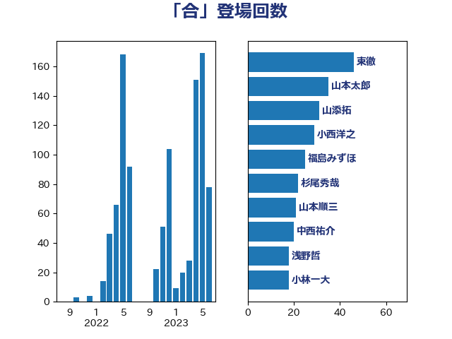

単語「合」

| 東徹 | 日本維新の会 | 46 回 |
| 山本太郎 | れいわ新選組 | 35 回 |
| 山添拓 | 日本共産党 | 31 回 |
| 小西洋之 | 立憲民主党 | 29 回 |
| 福島みずほ | 社会民主党 | 25 回 |
| 杉尾秀哉 | 立憲民主党 | 22 回 |
| 山本順三 | 自由民主党 | 21 回 |
| 中西祐介 | 自由民主党 | 20 回 |
| 浅野哲 | 国民民主党 | 18 回 |
| 小林一大 | 自由民主党 | 18 回 |
| 進藤金日子 | 自由民主党 | 17 回 |
| 浅田均 | 日本維新の会 | 15 回 |
| 西田実仁 | 公明党 | 14 回 |
| 舞立昇治 | 自由民主党 | 13 回 |
| 有村治子 | 自由民主党 | 13 回 |
| 山谷えり子 | 自由民主党 | 13 回 |
| 大塚耕平 | 国民民主党 | 13 回 |
| 鈴木義弘 | 国民民主党 | 12 回 |
| 新藤義孝 | 自由民主党 | 12 回 |
| 舟山康江 | 国民民主党 | 11 回 |
| 片山さつき | 自由民主党 | 11 回 |
| 打越さく良 | 立憲民主党 | 11 回 |
| 佐々木さやか | 公明党 | 11 回 |
| 伊藤孝江 | 公明党 | 10 回 |
| 音喜多駿 | 日本維新の会 | 9 回 |
| 臼井正一 | 自由民主党 | 9 回 |
| 矢倉克夫 | 公明党 | 9 回 |
| 岸田文雄 | 自由民主党 | 9 回 |
| 井林辰憲 | 自由民主党 | 8 回 |
| 猪瀬直樹 | 日本維新の会 | 7 回 |
| 高木かおり | 日本維新の会 | 6 回 |
| 奥野総一郎 | 立憲民主党 | 6 回 |
| 古川俊治 | 自由民主党 | 6 回 |
| 仁比聡平 | 日本共産党 | 6 回 |
| 長浜博行 | 無所属 | 5 回 |
| 鈴木淳司 | 自由民主党 | 5 回 |
| 石川大我 | 立憲民主党 | 5 回 |
| 中曽根弘文 | 自由民主党 | 5 回 |
| 熊谷裕人 | 立憲民主党 | 4 回 |
| 和田政宗 | 自由民主党 | 4 回 |
| 加藤明良 | 自由民主党 | 4 回 |
| 足立敏之 | 自由民主党 | 3 回 |
| 笠井亮 | 日本共産党 | 3 回 |
| 石井準一 | 自由民主党 | 3 回 |
| 牧野たかお | 自由民主党 | 3 回 |
| 浜野喜史 | 国民民主党 | 3 回 |
| 浅尾慶一郎 | 自由民主党 | 3 回 |
| 柴田巧 | 日本維新の会 | 3 回 |
| 松下新平 | 自由民主党 | 3 回 |
| 斎藤洋明 | 自由民主党 | 3 回 |
| 山下芳生 | 日本共産党 | 3 回 |
| 小野泰輔 | 日本維新の会 | 3 回 |
| 小林鷹之 | 自由民主党 | 3 回 |
| 加藤勝信 | 自由民主党 | 3 回 |
| 阿部弘樹 | 日本維新の会 | 2 回 |
| 金子恭之 | 自由民主党 | 2 回 |
| 重徳和彦 | 立憲民主党 | 2 回 |
| 西田昌司 | 自由民主党 | 2 回 |
| 萩生田光一 | 自由民主党 | 2 回 |
| 若松謙維 | 公明党 | 2 回 |
| 石田昌宏 | 自由民主党 | 2 回 |
| 石川昭政 | 自由民主党 | 2 回 |
| 田嶋要 | 立憲民主党 | 2 回 |
| 新垣邦男 | 立憲民主党 | 2 回 |
| 斎藤アレックス | 国民民主党 | 2 回 |
| 小沼巧 | 立憲民主党 | 2 回 |
| 宮澤博行 | 自由民主党 | 2 回 |
| 安江伸夫 | 公明党 | 2 回 |
| 北側一雄 | 公明党 | 2 回 |
| 伊東信久 | 日本維新の会 | 2 回 |
| 中川正春 | 立憲民主党 | 2 回 |
| 高良鉄美 | 無所属 | 1 回 |
| 高橋千鶴子 | 日本共産党 | 1 回 |
| 馬場成志 | 自由民主党 | 1 回 |
| 青柳仁士 | 日本維新の会 | 1 回 |
| 青山繁晴 | 自由民主党 | 1 回 |
| 長友慎治 | 国民民主党 | 1 回 |
| 鎌田さゆり | 立憲民主党 | 1 回 |
| 鈴木貴子 | 自由民主党 | 1 回 |
| 赤池誠章 | 自由民主党 | 1 回 |
| 西村明宏 | 自由民主党 | 1 回 |
| 藤井一博 | 自由民主党 | 1 回 |
| 芳賀道也 | 国民民主党 | 1 回 |
| 緒方林太郎 | 無所属 | 1 回 |
| 細野豪志 | 自由民主党 | 1 回 |
| 空本誠喜 | 日本維新の会 | 1 回 |
| 穀田恵二 | 日本共産党 | 1 回 |
| 福島伸享 | 無所属 | 1 回 |
| 礒崎哲史 | 国民民主党 | 1 回 |
| 田中健 | 国民民主党 | 1 回 |
| 甘利明 | 自由民主党 | 1 回 |
| 滝波宏文 | 自由民主党 | 1 回 |
| 池下卓 | 日本維新の会 | 1 回 |
| 江田憲司 | 立憲民主党 | 1 回 |
| 武部新 | 自由民主党 | 1 回 |
| 松原仁 | 立憲民主党 | 1 回 |
| 本庄知史 | 立憲民主党 | 1 回 |
| 新妻秀規 | 公明党 | 1 回 |
| 平木大作 | 公明党 | 1 回 |
| 平口洋 | 自由民主党 | 1 回 |
| 岩渕友 | 日本共産党 | 1 回 |
| 岡本あき子 | 立憲民主党 | 1 回 |
| 山田宏 | 自由民主党 | 1 回 |
| 宮崎雅夫 | 自由民主党 | 1 回 |
| 太栄志 | 立憲民主党 | 1 回 |
| 城井崇 | 立憲民主党 | 1 回 |
| 吉良州司 | 無所属 | 1 回 |
| 古庄玄知 | 自由民主党 | 1 回 |
| 古川禎久 | 自由民主党 | 1 回 |
| 務台俊介 | 自由民主党 | 1 回 |
| 佐々木紀 | 自由民主党 | 1 回 |
| 伴野豊 | 立憲民主党 | 1 回 |
| 井野俊郎 | 自由民主党 | 1 回 |
| 井上哲士 | 日本共産党 | 1 回 |
| 中谷一馬 | 立憲民主党 | 1 回 |
| 上月良祐 | 自由民主党 | 1 回 |